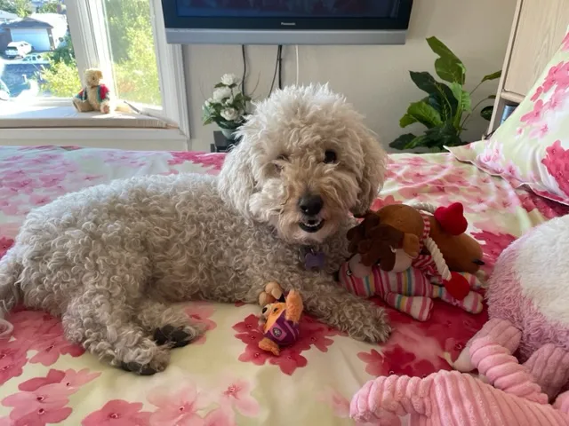

 I have been a lucky dog right from the beginning. You see, I was born in a field and my mommy took such good care of me — I got all the milk and all the warmth I wanted. I loved nuzzling-in with my brothers and sisters.
Another piece of good luck was when I was just striking out on my own (I was seven weeks old), and Don, Mary, and their son, Tom were driving by. They stopped, saw that I had no collar, let alone a chip, and gently put me in the car, right on Tom’s lap. I knew this was going to be good. And yes, they turned out to be my forever family.
I have such memories. I had heard through the bonevine that many dogs have to sleep in crates or even outside in a doghouse. But from Night One, I slept in Tom’s bed and he didn’t even make me sleep at the foot of the bed. He let me nuzzle right in, just like I did with my mommy.
I have such memories. I had heard through the bonevine that many dogs have to sleep in crates or even outside in a doghouse. But from Night One, I slept in Tom’s bed and he didn’t even make me sleep at the foot of the bed. He let me nuzzle right in, just like I did with my mommy.
And we had a backyard, an enclosed backyard, so I could romp and do my business without my family worrying I’d run away. I must admit that if there were an opening, I’d be tempted to go out and explore, but it was fine.
I got plenty chance to explore when Don, Mary, or Tom took me on a walk — Oh the sights and smells — other people, flowers, other doggies! And oh when we took a trip somewhere — all new sights and smells. Of course, my favorite was Carmel — There’s an off-leash beach. I loved going in the waves, well, up to my ankles. Further out would have been scary. And most restaurants in Carmel have a patio, so I didn’t have to wait in the car. One restaurant even has a doggie menu! I always ordered their Quarter Hounder.
When I got older, my joints started to hurt. The vet said I have arthritis. And over the years, it got worse. It has gotten so bad that it really hurts to walk. And now, most of the time, I can’t even make myself get up to pee.
So my family took me to the vet. I’m writing to you while on the vet’s table. She just came in and gave me a shot. It’s making me sleepy and Don, Mary, and Tom are all crying, I don’t know why. I just know that I’m getting very sleepy, so I’ll say goodbye for now.
I read this aloud on YouTube.
Marty Nemko is an award-winning career and personal coach, and author of 30 books, including Light: short-short stories on life’s brighter side. You can reach Marty at mnemko@comcast.net